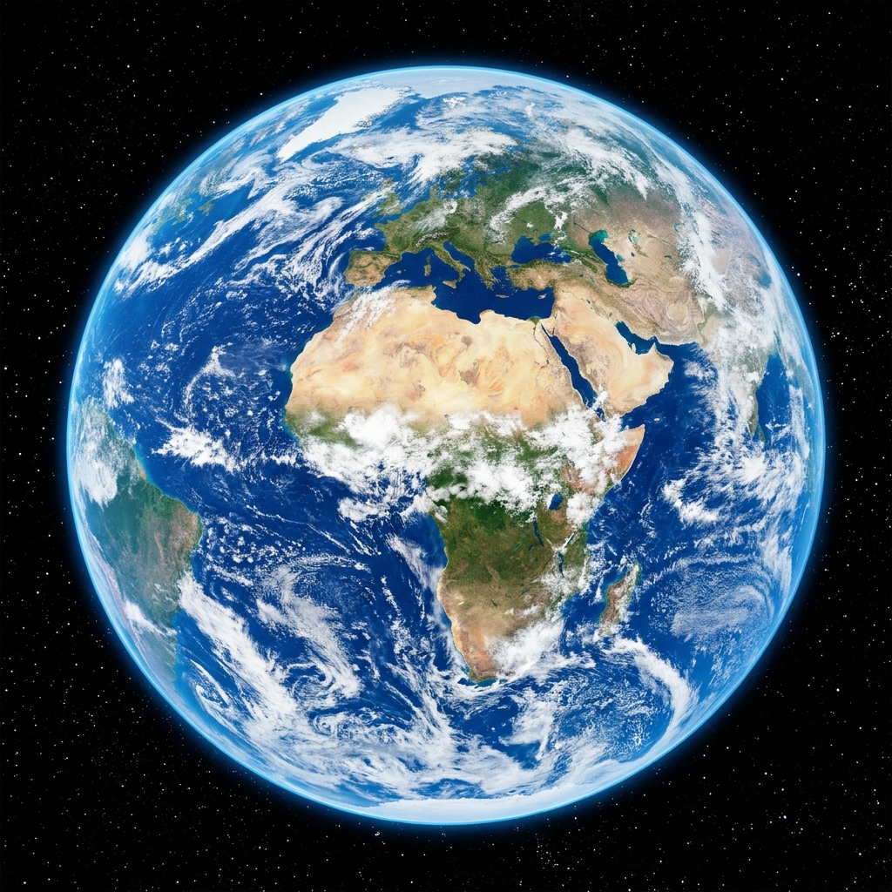

SOLAR SYSTEM · THIRD ROCK FROM THE SUN
地球 · PLANET EARTH
在浩瀚寂靜的宇宙暗夜中，唯一閃爍著生命光芒的蔚藍孤島。八十億人的家園，所有愛、希望與歷史的起點。

滑鼠移動感受 3D 視差，點擊熱點探索地表特徵
光學模式
行星數據看板 PLANETARY TELEMETRY
軌道監測正常 · 1.000 AU赤道直徑 · EQUATORIAL DIAMETER
12,742 km
約為月球直徑的 3.66 倍，極直徑 12,714 km
公轉軌道速度 · ORBITAL VELOCITY
29.78 km/s
時速約 107,200 km，繞行太陽一圈需 365.25 日
地表水陸比例 · SURFACE RATIO
71% : 29%
海洋面積 3.61 億平方公里，總儲水量達 13.8 億立方公里
大氣主要成分 · ATMOSPHERE
78% N₂ · 21% O₂
微量氬氣 (0.93%) 與二氧化碳，平均氣壓 101.325 kPa
地表平均溫度 · MEAN SURFACE TEMP
+14.9 °C
溫室效應使地球溫度維持在生命最適宜的液態水區間
當前人類總人口 · TOTAL POPULATION
80.9 億
此時此刻共同居住於這顆藍色星球上的生命同胞
“再看看那個光點。那是這裡。那是家。那是我們。所有你所愛的人、你認識的人、你聽說過的人，以及曾經存在過的所有人類，都在這上面度過了他們的一生……這顆懸浮在陽光中的塵埃微粒。
“Look again at that dot. That's here. That's home. That's us. On it everyone you love, everyone you know, everyone you ever heard of, every human being who ever was, lived out their lives... on a mote of dust suspended in a sunbeam.”